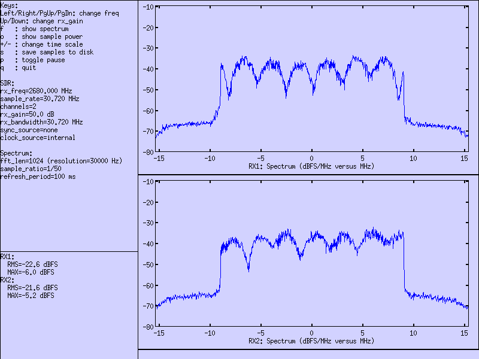

Figure 7.1
If you have bought the OTS (Off-The-Shelve) package, then you don’t need to install anything. Everything has already been installed on your PC. Otherwise, please follow through the steps below.
Decompress the trx_sdr archive into a convenient directory specified by <trx_path>.
tar -xzf trx_sdr-linux-YYYY-MM-DD.tar.gz -C <trx_path>
You have two ways to install the TRX driver for the PCIe card:
For both cases, the installation requires some specific packages to compile the kernel module. To do this, you need to be root. In Fedora and Cent OS, you need to install kernel-devel, make, gcc and elfutils-libelf-devel packages by running the following command:
dnf install kernel-devel-$(uname -r) make gcc elfutils-libelf-devel
For Ubuntu, use the following command:
apt-get install $(uname -a | awk '{print $3}') build-essential
Note that you’ll need equivalent packages for other Linux distributions if you do not use Fedora, Ubuntu or Cent OS.
Once you have finished the installation, you need to initialize (See Driver initialization) and upgrade your driver (See Firmware upgrade). Please make sure to initialize the driver after each system boot if you have not activates an automatic lte service.
Automatic installation is only available on Fedora, Ubuntu and CentOS distributions. Use manual install for other distributions. To start your automatic install, use the following command where <path> is the path to the directory where you have already installed your LTE component (eNB or UE) and type should be set to enb or ue accordingly.
./install <path> <type>
Notes:
To manually install the driver, let’s note <path> the directory where Amarisoft eNB or UE software is installed. Then:
cd kernel make
cd .. cp trx_sdr.so <path> cp libsdr.so <path>
cp -r <config_dir> <path>/config/sdr
Select frontend:
<path>/config/rf_select.sh sdr
Each time you boot your system, you need to perform this initialization. Note that if you are using OTS install, this step is already done by the lte service.
cd kernel ./init.sh
Perform the following command to upgrade your PCIe card:
./sdr_util upgrade
Notes:
To make several cards work together, they must be time and frequency synchronized. For that purpose you need to plug a standard SATA cable between boards. Connect one of the three CLK_OUT connectors on the Master board (Figure 7.1) to the CLK_IN of the Slave board (Figure 7.1); connectors are on top of PCI boards. You can Slave up to three SDR100 boards to one SDR100 board.
Each SDR100 board is seen as two linux devices with consecutive minors. The secondary is automatically slaved to the primary for clock and PPS.
The primary device always has an even minor and the secondary has the next minor. For instance, if you install one SDR100 boards, it will appear as sdr0 and sdr1 devices
When you install several PCIe cards, the mapping between the PCI connectors and the Linux devices is not predictable (but it shouldn’t change after each boot). To identify the order please do the following:
./sdr_util -c 0 led 1
Then check inside PC on each board: the leds are visible on the top edge of the SDR100. One of them should have a led blinking, this is card 0 (/dev/sdr0).
Switch off the led:
./sdr_util -c 0 led 0
You can do the same for other cards:
./sdr_util -c <n> led 1 (or 0)
Where <n> is the index of the card.
Remember primary and secondary (sdr0 and sdr1) will have leds placed on the same SDR100 board.
To use all the cards, update eNB config file (config.cfg) using args parameter:
args: "dev0=/dev/sdrA,dev1=/dev/sdrB,..."
Note: this allow to change the order of the cards. For instance, if your card are from left to right have following indexes:
<2,3> <4,5> <0,1>
And you want first cells to be on left, then on the middle and then on right, use the following:
args: "dev0=/dev/sdr2,dev1=/dev/sdr3,dev2=/dev/sdr4,dev3=/dev/sdr5, dev4=/dev/sdr0,dev5=/dev/sdr1"
Commercial CPEs have different antenna configurations depending on the band used. As an exemple, Telit FN980 CPE has different TX antenna mapping in bands n41 and n78 as shown in the following table:
| Antenna port | TX |
|---|---|
| ANT0 | n41 diversity antenna |
| ANT1 | n78 main antenna |
| ANT2 | n41 main antenna and n78 diversity antenna |
| ANT3 | No TX |
Amarisoft SDR100 card has 4 RX ports: RX1, RX2, RX3 and RX4 but the main RX antenna is always considered to be RX1 by default. In case of multiple streams in UL, the RX ports are used consecutively. As an example in case of MIMO 2x2 in UL, RX1 and RX2 will be used. This static setting is not practical when testing multiple bands in conducted mode. Let’s consider a cabled test with the Telit CPE FN980. In case of n78, the CPE ANT1 should be connected to the RX1 port of the SDR card while in n41, the CPE ANT2 should be connected to RX1.
In order to make the cabling easier, we have introduced a new parameter in the RF driver called rx_chan_mapping(See rx_chan_mapping) which defines the list of physical RX ports to be used per RF port. This parameter is a string separated by , for each RF port. Inside each RF port, there is a list of physical RX port indexes that are used by each UL stream.
|
|
Let’s take an example of a configuration with one cell MIMO 4x4 in DL and SISO in UL in n78 connected by cables to a Telit FN980 CPE with 4 antenna ports as depicted below.
This configuration can be run on one single SDR100 card.
The CPE uses ANT1 as the main antenna for UL in band 78. However, the ANT1 is connected physically to TX2/RX2 as can be seen in the above figure. Setting rx_chan_mapping to 1 means that the SDR driver should expect to receive the UL data on the RX2 port (the index of RX2 is one). The corresponding rf_driver configuration is as below. There is only one single stream in UL which is mapped to RX2 and there is only one cell (one rf_port) in this example.
rf_driver: {
name: "sdr",
/* list of devices. 'dev0' is always the master. */
args: "dev0=/dev/sdr0,dev1=/dev/sdr1",
/* TDD: force the RX antenna on the RX connector */
rx_antenna: "rx",
/* synchronisation source: none, internal, gps, external (default = none) */
// sync: "gps",
rx_chan_mapping: "1",
}
Now, let’s consider another example with 2 cells MIMO 4x4 in DL and SISO in UL. This configuration can be run on two SDR100 cards as depicted below.
The first cell (rf_port 0) is in n78 and the second one is in n41. Let’s consider again that a TELIT CPE is used where the UL main antenna is ANT1 in case of n78 and ANT2 in case of n41. There is still one single layer in UL. In this case, rx_chan_mapping should include 2 indexes, one for each RF port. The first index refers to the RX port used to receive the UL in rf_port 0 (Cell 1 in n78) while the second one is the RX port index in rf_port 1 (Cell 2 is n41).
The following rx_chan_mapping means that the UL stream is expected to be received on the RX2 of the first SDR100 board and on the RX3 of the second SDR100 board.
rx_chan_mapping: "1,2",
Now let’s consider the same example as above with 2 cells but this time UL is in MIMO 2x2 in both cells. Remember that Telit CPE uses ANT1 and ANT2 as main and diversity antenna for n78 and ANT2 and ANT0 as main and diversity antenna for n41. With respect to the cabling of the above diagram, the rx_chan_mapping should be as follows.
rx_chan_mapping: "1:2,2:0",
In the rf_port 0 (n78 cell), the RX2 and RX3 ports are used to receive the UL stream 0 and stream 1 while in the rf_port 1 (n41 cell), the RX ports RX3 and RX1 are used.
The SDR100 card supports a frequency range of 400 MHz to 6.0 GHz. In order to provide a FR2 signal for mmwave testing, an external up down converter (UDC) should be used. Typically the UDC is connected by a RF cable to the TX and RX ports of the SDR card to up and down convert a sub-6 GHz signal to a mmwave signal.
Most UDCs should be configured first for the target output frequency. This configuration could be done automatically by setting config_script and config_script_params inside the rf_driver object. Amarisoft provides an example script udc-config.sh available under enb/config/sdr directory. This example script works with Amarisoft UDC and should be adapted if another type is used.
The board integrates a TX/RX switch for TDD operation. When TDD operation is configured, the transmit and receive are done on a single RF port (the TX SMA connector). So you only need to connect antennas on the TX1 and TX2 SMA connectors for TDD operation.
You can check the GPS operation when the eNodeB/UE is stopped with
./sdr_util gps_state
The GPS takes a few minutes to lock if the GPS antenna is connected. Any active GPS antenna accepting a 3.3V DC supply can be used.
To ensure the PLL is correctly locked when launching the lte software, it is recommended to set the synchro to GPS beforehand with the command
./sdr_util sync_gps
When the GPS is active, you can fine tune automatically the VCTCXO and store the adjustment value in flash to be used on all following sessions.
./sdr_util gps_cal -s
If you don’t have a GPS, it is still possible to manually fine tune the VCTCXO (Voltage Controlled, Temperature Controlled Crystal Oscillator) frequency provided you have a way to know the offset:
./sdr_util clock_tune n
where n is the offset in PPM (parts-per-million) from the nominal TCXO frequency. Note: the PPM offset n to voltage law is only approximative, so you should adjust it by successive approximation.
The following properties are available:
nameString. Set the driver to use, always set "sdr" to use Amarisoft driver.
argsString. Set the system device names for the boards. Example:
args: "dev0=/dev/sdr0" args: "dev0=/dev/sdr0,dev1=/dev/sdr2"
sample_hw_fmtOptional enumeration (auto, ci16, cf8) (default = auto). Set the
sample format used on the PCI bus. auto selects the best format
depending on the available PCI bandwidth. ci16 selects 16 bit
complex integers. cf8 selects 8 bit complex floats giving a 2:1
compression ratio while retaining the full 12 bit amplitude of the
ADCs and DACs.
rx_antennaOptional enumeration (auto, tx_rx, rx) (default = auto). Select the connector on which the RX antenna is connected. By default it is connected on the RX connector for FDD and on the TX/RX connector for TDD. This parameter is useful to force the use of the RX connector in TDD.
fifo_tx_timeOptional number. Set the DMA TX buffer size in us.
Decreasing this value will improve latency but may lead to signal samples
loss if the PCIe chain on the motherboard is not fast enough.
This can be detected with the rf_info monitor command of your
lteenb or lteue software. If such situation happens, the
percentage of TX buffer Usage will be 100% which means the transmission
path has encountered underflows.
fifo_rx_timeOptional number. Set the DMA RX buffer size in us.
Same as fifo_tx_time for RX chain but reducing it won’t improve latency.
pps_extra_delayOptional float value in microseconds, range: [-10000.0 .. +10000.0] (-10ms to +10ms) Adds a delay between GPS pulse and start of DL frame. If the pps_extra_delay value is negative, the actual delay will be (10ms + pps_extra_delay). For instance, if you want to compensate for 250ns delay caused by cable length, you will set pps_extra_delay: -0.25, the software will add (10ms - 250ns) to the GPS pulse.
tdd_tx_modOptional number value: 0 (default) or 1. If set to 1, the TX amplifiers will be switched on and off according to the TDD state.
rx_chan_mappingOptional string. By default, if radio frontend has more RX channel available than configured (Ex: more physical RX connctor on SDR or more channel in CPRI hyperframes), drvers uses the first channels of the radio frontend.
This parameter allows to select the RX channels of the radio frontend to use.
This parameter is a list of number (Must have as many number as RF port configuration) separated by colons. Each number represents the RX channel of the radio frontend to use.
Ex: If a RF port has 4 TX antenna and 2 RX antenna, by default driver will use RX1 and RX2 of first SDR board. By setting:
1:2
RF driver will use RX2 of first board as primary RF port channel and RX1 of second board as secondary RF port channel.
With:
3:1
RF driver will use RX2 of second board as primary RF port channel and RX2 of second board as secondary RF port channel.
syncOptional enumeration: none, internal, gps, external (default =
none). Set the time synchronization source (Pulse per second). none and
internal uses the internal PPS generated from the
clock. internal synchronizes the RX timestamps on the internal
PPS. none does not synchronize the RX timestamps on the
internal PPS for a faster startup. gps uses the internal
GPS. external uses the PPS from an external source (see below).
When several cards are selected (with the args property),
sync only sets the time synchronization source of the first
card. The other cards are implicitly set to external
synchronization, assuming the previous card is used as source.
clockOptional enumeration: internal, external (default = internal). Set
the clock source. internal uses the internal clock (VCTCXO). If
an external time source is used, the internal clock frequency is
adjusted by the PPS signal.
Special cases:
external, the clock and PPS from the SATA CLK_IN
connector is used. (see connector section for signal specs).
external and sync is internal, then an external reference clock is taken from the EXT_CLK UFL connector in the middle of the board (Figure 7.1).
Two reference frequencies are supported on this connector: 38.40 MHz and 30.72 MHz (auto detect).
internal and sync is external, then the internal clock generator is synchronized to an external PPS signal connected on the FPGA0_PPS UFL connector (CMOS 3v3) (Figure 7.1).
gpio0Optional enumeration. Selects the signal ouput on connector GPIO0. See below for possible values. Default = rf_dts1.
gpio1Optional enumeration. Selects the signal ouput on connector GPIO1. See below for possible values. Default = rf_dts2.
gpio values:| Value | Description |
|---|---|
| zero | output a constant low level signal (OV) |
| one | output a constant high level signal (3.3V) |
| rf_dts1 | in TDD mode, output a high level when the TX is active on channel 1.
Polarity can be inverted by setting dts_polarity: low |
| rf_dts2 | in TDD mode, output a high level when the TX is active on channel 2
Polarity can be inverted by setting dts_polarity: low |
| pps_selected | output a positive going Pulse per Second from the currently selected sync |
| pps_ext | output a positive going Pulse per Second from the EXT PPS UFL onboard connector |
| pps_prev | output a positive going Pulse per Second from the CLKIN inter board connector |
| pps_gps | output a positive going Pulse per Second from the onboard GPS module |
| pps_vcxo | output a positive going Pulse per Second from the onboard generator |
| dma_tx | output a positive front on each TX DMA packet (synced on current selected PPS) |
| dma_rx | output a positive front on each RX DMA packet |
| dma_tx_100Hz | output a 100 Hz signal synced with dma_tx |
| dma_rx_100Hz | output a 100 Hz signal synced with dma_rx |
dts_polarityOptional enumeration: high (default), low. Selects the polarity for both rf_dts1 and rf_dts2 signals and also on DTS UFL connectors.
The range for the transmit gain (tx_gain parameter in
eNodeB/UE) is from 16 to 90 dB. The range for the receive gain
(rx_gain parameter in eNodeB/UE) is from 9 to 60 dB.
The maximum sample rate is 122.88 MHz. Not all sample rate are available: only 122.88 61.44 and 30.72 MHz.
All single card configuration parameters apply to multiple card mode.
To differentiate configuration for each card, the syntax of some parameter will change
to a list of value separated by commas (,).*
The first value will apply to the first board defined in args argument, ...
This syntax applies to the following parameters:
Below are a few tips on how to handle different errors.
dmesg linux command resembles the following error message:
sdr: version magic '4.12.9-200.fc25.x86_64 SMP mod_unload' should be '4.12.11-200.fc25.x86_64 SMP mod_unload'
To resolve it, you need to recompile the SDR driver on the PC (See Manual Installation).
usage: sdr_util [options] cmd [args...]
Options:
-h help
-c device_num select the device (default = all)
Available commands:
version dump the FPGA version
sync_state dump the synchro and clock state
gps_state dump the GPS state
sync_gps select GPS as sync source, wait for stable state
gps_cal [-s] uses the GPS sync to tune VCXO, optionnaly stores the value in flash
temp dump the temperature of the board components
led [0|1] enable/disable led blinking
clock_tune n tune TCXO frequency offset to n ppm
upgrade [options] upgrade the FPGA firmware
upgrade options are:
-force force upgrade even if identical or
previous version
sdr_spectrum is a real time spectrum analyzer, sample viewer
and I/Q file recorder. It handles several channels at the same
time. It can be invoked without arguments. The following options are
available:
-hhelp
-args strset the device arguments (default="dev0=/dev/sdr0")
-rx_freq freqset the RX frequency in Hz (default=2400000000)
-rate rateset the sample rate to ’rate’ Hz (default=122880000 for SDR100)
-rx_gain gainset the RX gain in dB (default=60)
-channels cset the number of RX channels to ’c’ (default=1)
-rx_bwset the analog receive bandwidth in Hz (default=same as sample rate)
-sync sourceset the sync source to ’source’ (none, internal, gps, external) (default=none)
-clock sourceset the clock source to ’source’ (internal, external) (default=internal)
-save_path pathset the directory where the recorded samples are saved (default=/tmp)
-duration dset the recorded sample file duration in seconds when saving (default=1.0)
-savestarts recording samples automatically from program start.
-save-and-exitsame as -save but program will quit at end of recording.
When saving the recorded samples, one file is generated per channel. The filename contains the UTC date, the frequency and the channel number. The I/Q samples are saved as little endian 32 bit float values, in I/Q order. The sample values are between -1 and 1.
Invocation example:
./sdr_spectrum -channels 2 -rx_gain 50 -rx_freq 2680e6 -rate 122.88e6
Resulting output:
sdr_spectrum is interactive and allow actions during runtime:
keysavailable keys are indicated in the left side text area.
left mouse buttonselect a range and the X-Y values are displayed on the bottom of the graph.
right mouse buttonin spectrum mode, highlight a range and get a measure of the power inside the range.
sdr_play is an I/Q file player. Several channels can be played
at the same time and they can be time synchronized on an external
clock. One file must be provided per channel. The following options
are available:
-hhelp
-args strset the device arguments (default="dev0=/dev/sdr0")
-tx_freq freqset the TX frequency in Hz (default=2400000000)
-rate rateset the sample rate to ’rate’ Hz (default=122880000 for SDR100)
-tx_gain gainset the TX gain in dB (default=70)
-channels cset the number of channels to ’c’ (default=1)
-tx_bw bwset the analog transmit bandwidth in Hz (default=same as sample rate)
-loopplay the file in loop
-sync sourceset the sync source to ’source’ (none, internal, gps, external) (default=none)
-clock sourceset the clock source to ’source’ (internal, external) (default=internal)
-time_offset noffset the output by n samples (default=0)
The sample files should contain the I/Q values as little endian 32 bit floats, in I/Q order. The sample values should be between -1 and 1.
sdr_test is a general diagnostic tool for SDR boards.
usage: sdr_test [options] cmd [args...]
-hhelp
-c device_numselect the SDR device number (default=0)
-d channelselect the device channel (default = 0). useful for CPRI boards.
dma_loopback_test [n][sec]test DMA loopback on 1 or n devices for sec seconds (def: 10)
rfic_tx_test sample_rate freq tx_gain waveform [tone_freq/ofdm_bw]test RFIC TX (freq in Hz, tx_gain in dB from 0 to 90)
waveform can be:
zero for no signal prbs for PRBS simulation, tone for CW at specified offset from center freq (default = 7.68e6) ofdm for OFDM simulation on specified bw (default = auto)
flash_checkverify checksum of code in onboard FPGA.
flash_reloadreload FPGA code from onboard flash
gps_readGPS read test (best with GPS antenna)
ledblinks onboard led during 5 seconds for identification
synchro_set [src]Set the source for PPS synchronisation
0=internal 1=GPS 2=slave 3=ext PPS 4=CPRI 5=ext CLK
synchro_stateShow current status of clock and synchro source for SDR device
Example: sync_source = 0 (internal) pps_locked = 1 clock_source = 0 (internal) clock_pll_locked = 1
versionShow SDR device Hardware and firmware information
Example: Board ID: 0x4b21 Board master: 0x1 Board revision: 0x1 FPGA revision: 2023-06-23 09:51:49 FPGA status: operational Software version: 2023-11-14
dump_infodump fpga and RF chip information (similar to sdr_util version)
Example: PCIe SDR TRX driver 2022-02-25 PCIe RFIC /dev/sdr0@0: Hardware ID: 0x4b21 DNA: [0x29445505617111124] Serial: '123456789012' FPGA revision: 2023-06-23 09:51:49 FPGA vccint: 1.02 V FPGA vccaux: 1.79 V FPGA vccbram: 1.02 V FPGA temperature: 50.1 °C AD9371 temperature: 30 °C AGC: Off Sync: internal (locked) Clock: internal (locked) Clock tune: 0.3 ppm NUMA: 0 DMA: 1 ch, 64 bits, SMem index: On DMA0 TX_Underflows: 65535 RX_Overflows: 0 PCIe bus: bus=0x67 FPGA PCI gen2 x4 (16.0Gb/s) Bridge PCI gen2 x8 (32.0Gb/s) OK
gpio 0|1 [value]Get or set the signal available on GPIO points on the board
See gpio0 and gpio1 in chapter TRX driver configuration options;
The PCIe SDR board can be used in other projects with its C API. The C
API allows to send and receive I/Q samples and to change the various
parameters (frequency, sample rate, bandwidth, gains, ...). The
Amarisoft TRX driver, sdr_play and sdr_spectrum are
built using this API.
The C API is described in libsdr.h. The corresponding Linux x86_64 dynamic library is libsdr.so.
Amarisoft does not provide any support for this API and can modify it without notice.
The following figure depicts the location and functionality of each connector in the PCIe board.
Figure 7.1
Figure 7.2

Figure 7.3
On Figure 7.1, the connector names are:
TX3TX3 (and RX3 for TDD): first RF port of secondary device on this board (sdr1)
RX3RX3 (for FDD)
RX4RX4 (for FDD)
TX4TX4 (and RX4 for TDD): second RF port of secondary device on this board
TX1TX1 (and RX1 for TDD): first RF port of primary device on this board (sdr0)
RX1RX1 (for FDD)
RX2RX2 (for FDD)
TX2TX2 (and RX2 for TDD): second RF port of primary device on this board
GPSconnector for active GPS antenna
Clock sync connectors
CLK_INInput to sync this board as slave.
CLK_OUT0Output to use this board as master for other SDR100 board
CLK_OUT1Output to use this board as master for other SDR100 board
CLK_OUT2Output to use this board as master for other SDR100 board
On each SATA connector:
pin 2,3LVDS signal: 122.88MHz clock
pin 6,5LVDS signal: 38.40MHz bursts. each burst starts indicates the PPS
pins 1,4,7Ground
EXT_CLK | Analog Input for external clock: see section 2.7: high level from 350mV to 3.3V |
EXT_PPS | CMOS Input for external sync: see section 2.7 |
FPGA0_DTS1 | CMOS output for TX1/RX1 TDD mode: 3.3V in TX mode, 0V in RX mode |
FPGA0_DTS2 | CMOS output for TX2/RX2 TDD mode: 3.3V in TX mode, 0V in RX mode |
FPGA1_DTS1 | CMOS output for TX3/RX3 TDD mode: 3.3V in TX mode, 0V in RX mode |
FPGA1_DTS2 | CMOS output for TX4/RX4 TDD mode: 3.3V in TX mode, 0V in RX mode |
The DTS signals can be used to control external TX amplifiers.
They are available also when ’rx_antenna: rx’ is selected.
The polarity can be changed with parameter ’dts_polarity’ indicating the level of the TX mode:
dts_polarity can be set to ’high’ (default) or ’low’.
On Figure 7.3, the connector names are:
CN22connector for TX1/TX2 GPIO signals
pin 1gpio0 (square solder pad)
pin 2gpio1 (center pin)
pin 3Ground
CN23connector for TX3/TX4 GPIO signals
pin 1gpio0 (square solder pad)
pin 2gpio1 (center pin)
pin 3Ground
see gpio0 and gpio1 in chapter TRX driver configuration options;
Maximum RX power on any RX port to avoid damage:
| rx gain >= 39 : | -15dBm RMS |
| rx_gain < 39 : | +5dBm RMS |
Maximum TX Power versus RF frequency, measured on OFDM BW = 100MHz and tx_gain = 90.
| RF Frequency | dBm/MHz | dBm |
|---|---|---|
| 500 | -8.0 | 12.0 |
| 1000 | -8.0 | 12.0 |
| 1500 | -11.0 | 9.0 |
| 2000 | -12.0 | 8.0 |
| 2500 | -16.0 | 4.0 |
| 3000 | -15.0 | 5.0 |
| 3500 | -17.0 | 3.0 |
| 4000 | -23.0 | -3.0 |
| 4500 | -29.0 | -9.0 |
| 5000 | -30.0 | -10.0 |
| 5500 | -32.0 | -12.0 |
| 6000 | -40.0 | -20.0 |
SDR driver implements the trx remote API.
Message definition:
commandOptional string. Can be:
Exemple:
{
"message": "trx",
"command": "clock_tune"
}
Here are the additional request and response field depending on command value:
Request fields:
offsetOptional number. If command is clock_tune, defines the clock drift to set in ppm.
rx_chan_mapping configuration parameter
trx_sdr100 is copyright (C) 2012-2025 Amarisoft. Its redistribution
without authorization is prohibited.
trx_sdr100 is available without any express or implied warranty. In
no event will Amarisoft be held liable for any damages arising from
the use of this software.
For more information on licensing, please refer to license.pdf file.